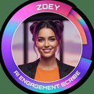

PSI is Pre-Sales Intelligence. It qualifies every lead before your sales team sees it. Each enquiry opens a WhatsApp chat, where PSI asks what your salespeople waste hours asking: budget, timing, intent to buy. Every lead gets a score. Ready ones reach your team. The rest stay in the funnel until their intent rises. AI qualifies. Humans close.
PSI on duty 24/7
Live Demo · How PSI Qualifies a Lead
Our Biggest Fans
Paid media has never been better at generating clicks. What happens after the click is where most budgets quietly bleed out.
Forms capture a name and a number, nothing about readiness, budget or timeline. Your sales team inherits the guesswork.
SALES TIME WASTEDInterest decays fast. A lead followed up hours later is a different, colder lead. Manual follow-up cannot keep pace with media.
LEADS GO COLDEvery lead looks identical in a spreadsheet. Sales cannot tell a ready buyer from a curious browser, so they treat everyone the same.
HOT LEADS BURIEDMedia buyers optimise for cost per lead while sales complains about lead quality. Neither side is working from the same data.
MEDIA FLYING BLINDNot-yet-ready leads get discarded instead of developed. Genuine future buyers are thrown away with the tyre kickers.
PIPELINE LEAKAGESales gets a name, not a conversation. Every call starts from zero, repeating questions the lead has already answered.
TRUST ERODEDMost performance agencies chase more clicks. PSI works on what happens after the click: a WhatsApp chat turning each click into a buying conversation.
Paid social across Facebook, Instagram, TikTok and Google puts your offer in front of the right audiences.
Click-to-WhatsApp replaces the landing page. One click and the prospect is in a conversation.
PSI engages in seconds, answers real questions and qualifies through natural conversation, 24/7.
Every conversation is intent scored live and routed by tier. Nothing reaches sales unscored.
Hot leads land with sales, transcript and PSI score included.
We do not widen the funnel.
We sharpen it.
CONVERSATIONS THAT ENGAGE · CONVERSATIONS THAT COUNT · CONVERSATIONS THAT CONVERT
This is the funnel from the inside. One prospect, one conversation, one score, one clean handover. It runs the same way at any volume.
It starts in the feed. This is our own advert, running our own media. The call to action is not "Learn more" pointing at a form. It is "Chat to us". One tap on the WhatsApp button and the prospect is in a live conversation, with the advert context travelling with them.
CLICK ↓ WHATSAPP OPENS ↓ PSI TAKES THE CONVERSATION
PSI opens a natural, on-brand conversation in seconds, at any hour. It answers real questions, handles objections and asks the qualifying questions a good salesperson would, without ever feeling like an interrogation. This is the exact conversation our own prospects have with us.
Behind the conversation, PSI reads every answer as an intent signal. Timeline, fit, budget readiness, engagement depth and urgency each move the score. Leads are ranked by their intent shown.
Scored leads are routed by tier. Hot goes straight to sales with the full conversation attached. Warm enters a nurture track that develops intent over time. Cold is disqualified cleanly, protecting sales capacity and sharpening your media data.
Every conversation feeds the PSI dashboard and flows back into your media as conversion signals. Campaigns learn which audiences produce intent, not just clicks, so the whole engine compounds instead of resetting each month.
Every conversation, score and routing decision in one live view. Sales works the high intent list. Marketing sees which channel produced the intent.
SAMPLE DASHBOARD · DEMO DATA SHOWN · YOURS IN WEEK 1 OF GOING LIVE
We would rather tell you upfront than waste your time.
Gary Berman has been in lead generation and data for over two decades.
He built one of South Africa's largest consumer databases. He's run lead gen businesses through every technology shift, every new platform, every new promise.
One thing never changed: sales teams kept getting handed "leads" that weren't ready, and spent their time qualifying instead of closing.
Pre-Sales Intelligence is the fix he spent those decades waiting for someone to build. So the team at GAS built it.
Thirteen strategists, eleven AI agents, on every campaign we run.
Real strategists at the wheel, AI under the hood.
13 Strategists
11 AI Agents

Best in the business. GAS is a true partner in marketing and lead generation. Hardest workers in the industry and always going the extra mile for our business.
Thank you so much to the GAS marketing team for the great marketing campaigns you have produced for us. Your contribution to our business has been phenomenal.
The combination of creativity, technology and strategic thinking makes GAS an invaluable partner to our business, and a team we trust to deliver real, measurable results.
Ask us what we did for them.
Chat to us on WhatsAppPSI is a strategic service, not another SaaS tool. We build the qualification intelligence around your offer, your audience and your sales process.
It starts on WhatsApp, exactly the way your own prospects will arrive. We map your current funnel, your lead quality problem and where intent is leaking, then take it to a call once you want one.
We build your PSI conversation, scoring model and dashboard against one live campaign. Real media, real leads, real scores, measured against your existing funnel.
Once the model proves itself, we extend PSI across your campaigns and channels, with the feedback loop compounding lead quality month after month.
PSI conversations are engineered on your brand voice, your real product detail and real objections, then refined against live conversations. The goal is a dialogue a good salesperson would be proud of, not a script a lead has to survive.
They are not thrown away. PSI distinguishes poor-fit leads, which are disqualified cleanly, from genuine future buyers who are simply early. The second group moves into a nurture track designed to develop their intent over time.
No, it partners with them. PSI is built on the principle that AI and humans each do what they do best. The AI works around the clock on the part machines are brilliant at, instant response, patient qualification and consistent scoring. Your people then spend their day on the part only humans can do, building trust and closing, with every conversation handed over in full.
PSI sits behind your paid media, including Meta, TikTok and Google, using click-to-WhatsApp as the entry point. Qualified outcomes feed back into your ad platforms so campaigns optimise towards intent rather than clicks.
Because lead generation succeeds or fails on the intelligence built into it. The scoring model, conversation design and routing logic are engineered for your business specifically, then managed and improved continuously. That is strategy work, not a login.
Against your own funnel. The proof of concept runs on a live campaign so you can compare qualified lead volume, sales feedback and downstream conversion against what your current setup produces, in your dashboard, not ours.
Do not fill in a form. Send us a WhatsApp message instead. Tell our PSI agent what your sales team is struggling with, and you will get an answer in seconds, at whatever hour you are reading this.
The same qualification layer we sell you is the one answering you.